Super starts with Magic
If you work in image matching, you know SuperPoint. If you don’t - that is one of the most successful modern local feature, developed by Daniel DeTone, Tomasz Malisiewicz and Andrew Rabinovich in 2017.
Idea was simple and genious: we know that corners are good keypoints. Let’s train a basic corner (in wide meaning) on unlimited synthetic data. Then we somehow adapt it to realworld images.
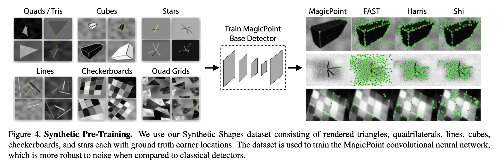
The adaptation is done under augmentation supervision. In other word - we believe that our detector is already good, but noisy and we will cancel this noise by running the same detector on multiple augmented version of the same image, which gives us pseudo-ground truth. The training is done via optimizing cross-entropy loss, which leads to very peaky response map compared to other alternatives such as R2D2.
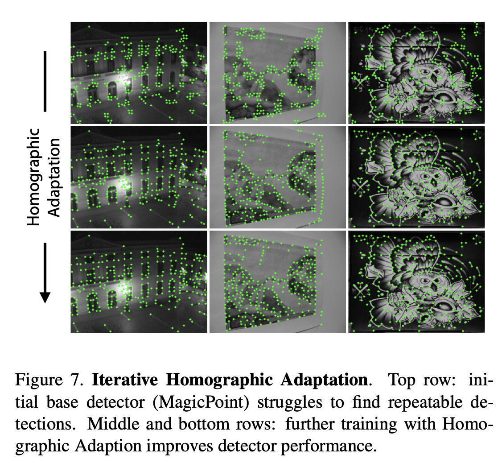
That’s it. The resulting detector (and descriptor) was fast enough on GPU and great for SLAM purposes. It was especially good on indoor images with lots of textureless areas.
On outdoor images it was not so great, however, as it was shown later, the problem was more in descriptor and matching, not detector. SuperGlue matching on top of SuperPoint local features won 3 competitions at CVPR 2020, including our Image Matching Challenge.
So, it was huge success. However, not without drawbacks. The main drawback is that training code was never released. That is why people tried independently re-implement SuperPoint, as well as present new, supposedly better versions of it.
Unfortunately, none of this version was properly evaluated, so we have no idea how they work in reality. Let me fill this gap and present a small eval of the SuperPoint children.
I’ll first do a short review of how are they different, and the benchmark will be in the last section.
Original SuperPoint
Besides the description, I will show how the detections are different between implementations. I will use two images. One is realworld photo taken by myself on Xiaomi phone, and another one is synthetic from OpenCV Blob detection tutorial. It is kind of adversarial, as SuperPoint is not designed to fire or not fire on circular patterns. Well, that is exactly why I added that image. So here are the original SP detections:
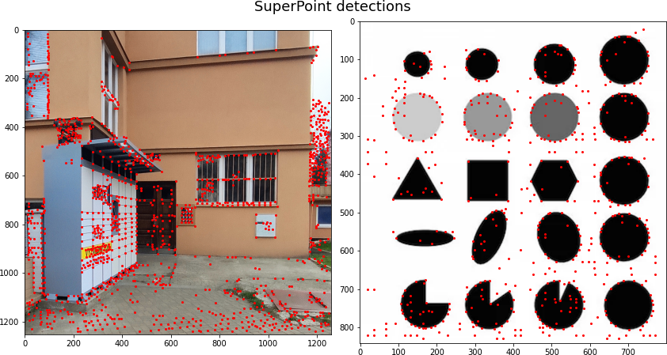
3rd party SuperPoint implementations
There are two main 3rd party SuperPoint implementations. One of them is in Tensorflow, by Rémi Pautrat and Paul-Edouard Sarlin. I will skip this one, because I am too lazy to install TF on my M1 machine. So I will show another - Pytorch - implementation, which is based on Tensorflow one, and is developed by You-Yi Jau and Rui Zhu.
Besides being 3rd party implementation, this one also has architectural changes. They are: - adding BatchNorm. - using SoftArgMax2d from torchgeometry (early version of kornia) to achieve subpixel accuracy.
Here are the detections by this version and original.
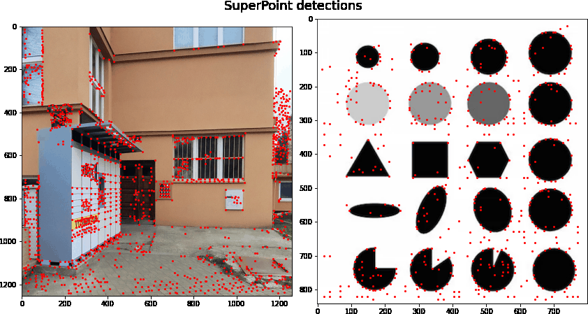
Here is also a short report by one of the authors: What have I learned from the implementation of deep learning paper?
SuperChildren
Reinforced SuperPoint
This is a paper by Aritra Bhowmik et al, named Reinforced Feature Points: Optimizing Feature Detection and Description for a High-Level Task. The main idea is that one can use reinforcement learning to optimize non-differentiable downstream metric such as camera pose accuracy through RANSAC.
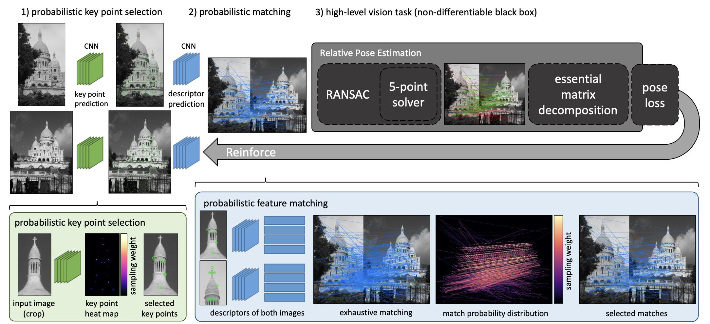
The idea is very cool, but the final result is not so. Specifically, the main thing end up optimized is keypoint score function. Which can increase a precision of the keypoint detector, but not the recall. See the image below for the illustration. The synthetic image at the right clearly benefits, but the realworld image - not so much, because of loosing many keypoints on the ground.
This also can explain a bit worse performance of the Reinforced SuperPoint in our evaluation - we don’t set the confidence threshold, but instead take top-2048 keypoints whatsoever.
UnsuperPoint
This is a paper from eiva.com and Aarhus University by Peter Hviid Christiansen, which proposed to drop the supervised pretraining and use regression module instead of CE on heatmap for training detector.
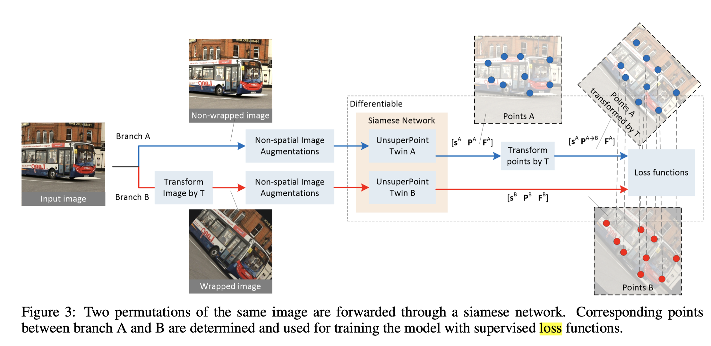
Unfortunately, there is no implementation available, so I will pretend the paper never existed.
KP2D aka KeypointNet aka IONet
Despite no implementation, UnsuperPoint inspired other people to make a follow-up, which was published at ICLR 2020. The paper name is “Neural Outlier Rejection for Self-Supervised Keypoint Learning” by Jiexiong Tang et al.
It made two contributions. First, paper argues that cell-based approach (SuperPoint and friends have 1 keypoint per 8x8 px cell) is unstable for training when keypoints are near the cell border. Second, it introduced yet another loss function, similar to CNe and other outlier rejection methods.
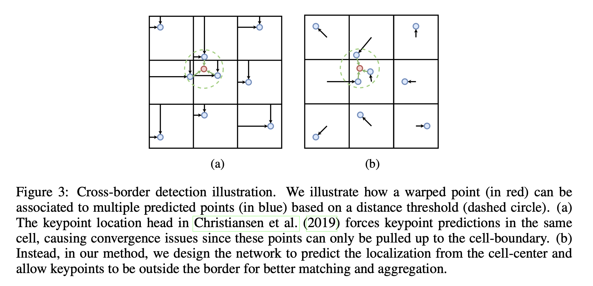
Here are the KP2D detections for all versions. Note that on realworld image it detects corners nicely, despite not being training for it specifically. On the synthetic blob image it mostly work as dark-to-light (or light-to-dark for V0 and V2) edge detector, no idea why.

LANet
It is the most recent paper of the SP family, published at ACCV2022 – “Rethinking Low-level Features for Interest Point Detection and Description” by Changhao Wang et al.
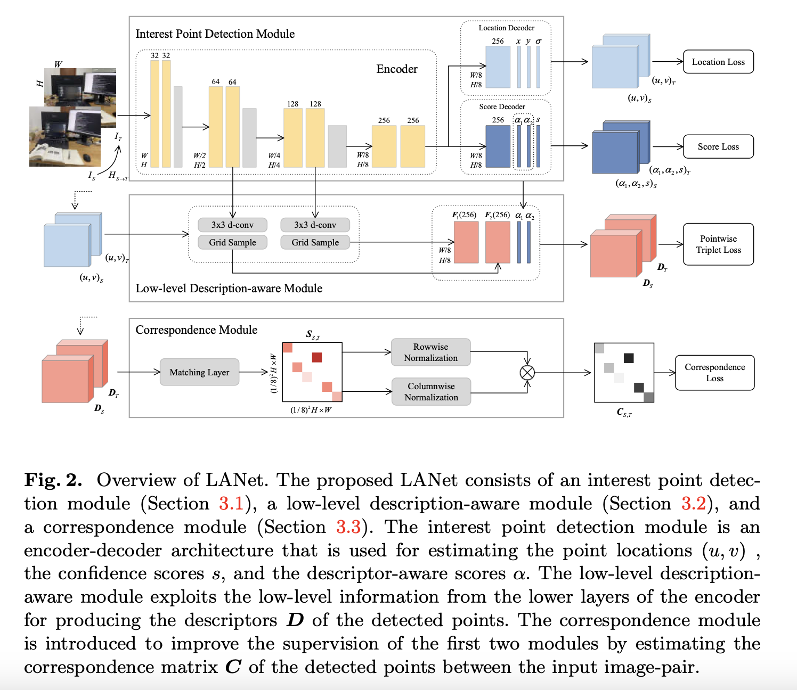
It is based on KP2D and presents mostly architectural changes into description branch. Second, it has two versions. v0 is similar to the SuperPoint original architecture – lightweight VGG-like network, trained from scratch. v1 is uses vgg16_bn, pretrained on the ImageNet as feature encoder. v1 is like 2-3x slower than v0.
Here are the detections:
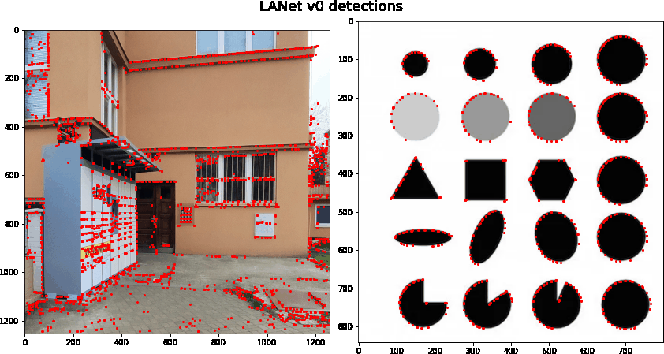
Benchmark on IMC PhotoTourism
I have benchmarked all the variants, using my own tutorial on how to submit to IMC-2021. The code for feature extraction is here (uncommented yet). All the images were resized to have 1024 px by large size (which explains the slight diffefences compared to original SuperPoint results in the paper, where 1200 was used. I have also circumvented confidence threshold and pick top-2048 keypoints instead for all images. Then I have tuned everything on the validation set (see table with optimal params in the end of the post) - such as matching threshold, RANSAC threshold and method-specific things, like “version” for KP2D and LANet, etc. Unlike for the IMC paper, I haven’t tuned anything for multiview setup. Specifically, matching threshold might be suboptimal. Anyway.
Finally I have run all features with found optimal parameters on the test set (GT is released now!). Here are the results.
Stereo task
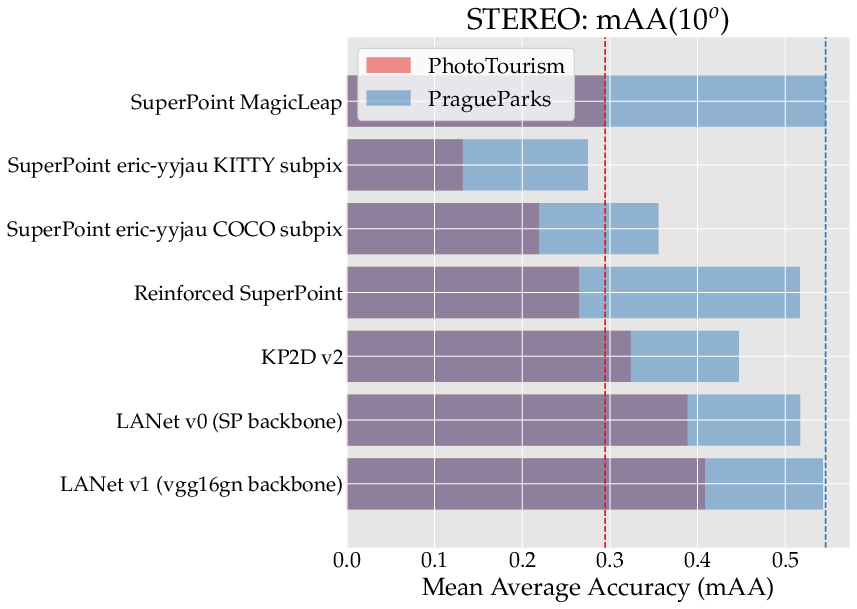
First, as you can see, 3rd part SuperPoint implementation is way worse: ~2x than MagicLeap one. Reinforced SuperPoint also is slightly worse. KP2D is better on PhotoTourism, but worse on the PragueParks. PragueParks is easier dataset than PhotoTourism, however it features different scenes. While PhotoTourism is mostly buildings, PragueParks contains natural scenes such as trees and pond. Thus I may argue that original SP is more general.
LANet works considerably better on Phototourism and on par on PragueParks. If considering adding to kornia, I would select LANet. It is interesting though, if it is performing well because of detector, or descriptor. The latter is worse, because training SuperGlue/OpenGlue would fix descriptor issues, but less of detector.
Multiview task
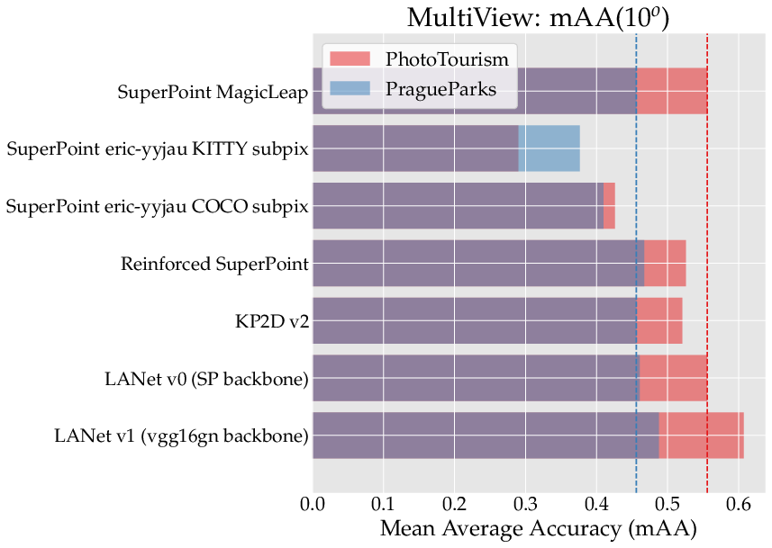
Multiview results are similar to stereo, with slight differences: Reinforced SP is slightly better than original on PragueParks, and LANet v0 is exactly as good as original SP.
Why eval only on HPatches is meaningless.
KP2D and 3rd party SuperPoint eval themselves on HPatches only. Let’s look at them. According to KP2D paper, it is slightly better than Superpoint on homography estimation and 2x better on matching score. Which we haven’t seen on realworld IMC data.
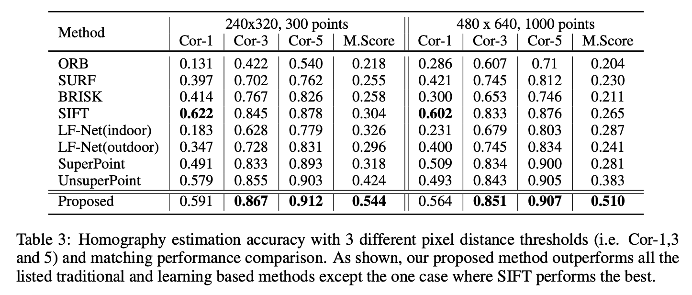
And here is eval from 3rd part SuperPoint. According to it, Superpoint-coco is almost as good as SP MagicLeap on homography estimation, better on detector metrics and slightle worse on descriptor metrics. Which, again, doesn’t correspond to our results.
| Task | Homography estimation | Detector metric | Descriptor metric | ||||
|---|---|---|---|---|---|---|---|
| Epsilon = 1 | 3 | 5 | Repeatability | MLE | NN mAP | Matching Score | |
| MagicLeap | 0.44 | 0.77 | 0.83 | 0.606 | 1.14 | 0.81 | 0.55 |
| superpoint_coco_heat2_0_170k_hpatches_sub | 0.46 | 0.75 | 0.81 | 0.63 | 1.07 | 0.78 | 0.42 |
| superpoint_kitti_heat2_0_50k_hpatches_sub | 0.44 | 0.71 | 0.77 | 0.56 | 0.95 | 0.78 | 0.41 |
Additional results from validation set and recommended hyper-paramers
Here I will present some results from the tuning on validation set. I believe that they would translate to the other datasets as well.
- L2-normalization of descriptor does not help ANY of the evaluated models. It doesn’t hurt either.
- Subpixel with soft-argmax helps 3rd party SuperPoint. One may try to apply it to original model as well. The difference is:
mAA = 0.2965for subpixel vsmAA = 0.2789no-subpixel on PhotoTourism and0.3567vs0.3274on PragueParks. - The
v2model of the KP2D is much better than then rest.v0andv1might be bugged, or require code changes to be run properly maybe?
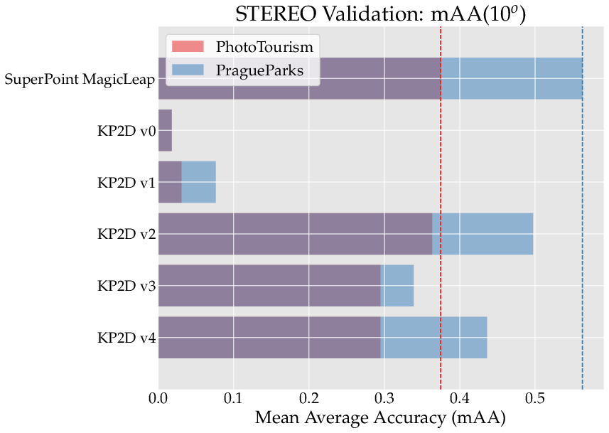
Optimal hyperparamers
SNN - 2nd nearest neighbor threshold, PT - PhotoTourism, PP - PragueParks, inl_th - inlier threshold for DEGENSAC.
| Method | mutual SNN threshold | PT inl_th | PP inl_th | PT val stereo mAA | PP val stereo mAA | Other |
|---|---|---|---|---|---|---|
| MagicLeap SuperPoint | 0.9 | 1.0 | 1.5 | 0.3746 | 0.5628 | n/a |
| Reinforced SuperPoint | 0.9 | 1.0 | 1.5 | 0.3491 | 0.5497 | n/a |
| SuperPoint 3rd party COCO | 0.95 | 0.75 | 1.0 | 0.2966 | 0.3488 | subpix |
| SuperPoint 3rd party KITTY | 0.95 | 0.75 | 1.0 | 0.1910 | 0.2621 | subpix |
| KP2D | 0.99 | 0.75 | 1.0 | 0.3633 | 0.4971 | v2 |
| LANet v0 | 0.99 | 0.5 | 1.0 | 0.4591 | 0.6175 | n/a |
| LANet v1 | 0.99 | 0.5 | 1.0 | 0.4838 | 0.6127 | n/a |
Conclusions
It seems that LANet and KP2D might be good alternatives to the MagicLeap SuperPoint. There are 2 missing things though:
- SuperGlue analogue yet to be trained for them. Nobody sane would you SuperPoint w/o SuperGlue for the most of the cases.
- Evaluation on indoor data, e.g. ScanNet. One of the SuperPoint strengths - good performance indoor, which is yet to be tested for others. I might test it, but right not in the mood to download, print and scan the data form required for ScanNet access.
Bonus: more visualizations
Legend: - blue points: COLMAP reconstructed 3D points - red point: non-matched keypoints .


Acknowledgements.
This blogpost is supported by CTU in Prague RCI computing cluster from OP VVV funded project CZ.02.1.01/0.0/0.0/16 019/0000765 “Research Center for Informatics” grant. Really, it took ~2 compute days to tune all those hyperparams and do tests.
Everything you (didn’t) want to know about image matching